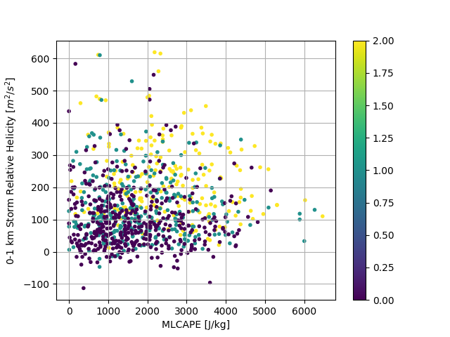

Note
Click here to download the full example code
Plotting data from the SARS database¶
Out:
/Users/travis/build/sharppy/SHARPpy/examples/plot_sars.py:29: UserWarning: Matplotlib is currently using agg, which is a non-GUI backend, so cannot show the figure.
plt.show()
import sharppy.sharptab as tab
import sharppy.databases.sars as sars
import numpy as np
import os
import matplotlib.pyplot as plt
database_fn = os.path.join( os.path.dirname( sars.__file__ ), 'sars_supercell.txt')
supercell_database = np.loadtxt(database_fn, skiprows=1, dtype=bytes, comments="%%%%")
magnitude = []
mlcape = []
srh01 = []
for record in supercell_database:
magnitude.append(int(record[1]))
mlcape.append(float(record[3]))
srh01.append(float(record[6]))
plt.grid()
plt.scatter(mlcape, srh01, c=magnitude, marker='.')
plt.colorbar()
plt.xlabel("MLCAPE [J/kg]")
plt.ylabel(r'0-1 km Storm Relative Helicity [$m^{2}/s^{2}$]')
plt.savefig('plot_sars.png', bbox_inches='tight')
plt.show()
Total running time of the script: ( 0 minutes 0.942 seconds)